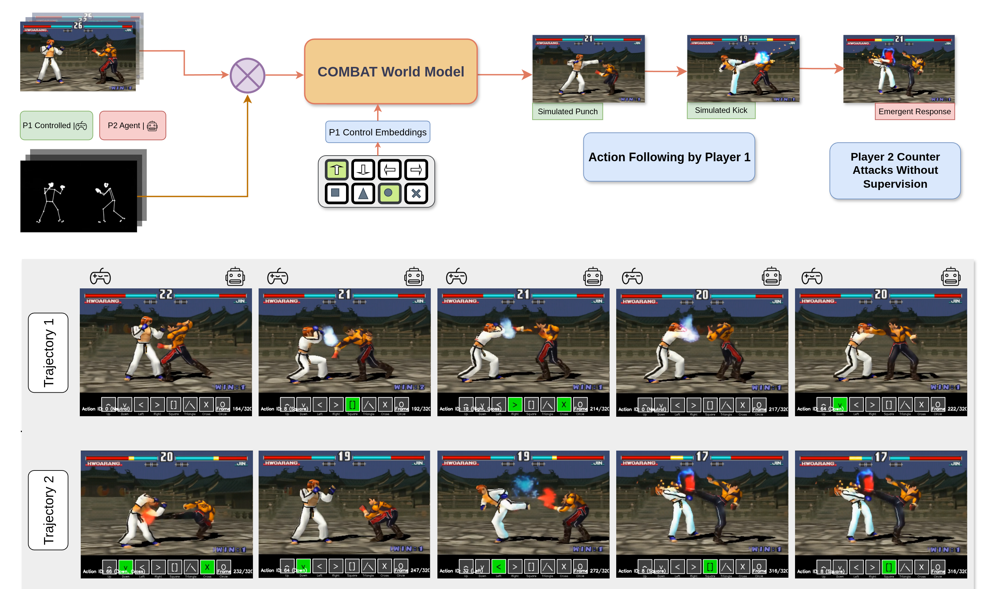

Gameplay Demonstrations
COMBAT generates plausible, temporally consistent gameplay frames conditioned on player inputs, producing high-quality real-time video of the Tekken 3 environment.
Recent advances in generative AI have spurred the development of world models capable of simulating 3D-consistent environments and interactions with static objects. A significant limitation of these models is the ability to model dynamic, reactive agents which can intelligently influence and interact with the world.
We introduce COMBAT, a real-time, action-controlled world model trained on the complex 1v1 fighting game Tekken 3 to address these shortcomings. Our work demonstrates that diffusion models can successfully simulate a dynamic opponent that reacts to player actions while learning its behavior implicitly.
Our approach utilizes a 1.2 billion parameter Diffusion Transformer, conditioned on latent representations from a deep compression autoencoder. We employ state-of-the-art techniques, including causal distillation and diffusion forcing to achieve real-time inference. Crucially, we observe the emergence of sophisticated agent behavior by training the model solely on single-player inputs, without any explicit supervision for the opponent's policy. Unlike traditional imitation learning methods which require complete action labels, COMBAT learns effectively from partially observed data to generate responsive behaviors for a controllable primary player (Player 1). We present our results from an extensive study and introduce novel evaluation methods to benchmark this emergent agent behavior, establishing a strong foundation for training interactive agents within diffusion-based world models.

COMBAT generates plausible, temporally consistent gameplay frames conditioned on player inputs, producing high-quality real-time video of the Tekken 3 environment.
Without explicit supervision of the opponent's policy, COMBAT learns sophisticated reactive behaviors purely from single-player gameplay data, demonstrating emergent intelligence in the simulated opponent.
We can smoothly interpolate between latent game states encoded by our deep compression autoencoder. Use the slider here to linearly interpolate between two game states, revealing the continuity of the learned latent space.

Start Frame

End Frame
Using COMBAT, we can replay full gameplay rollouts generated entirely by the world model, demonstrating coherent long-horizon simulation with reactive opponent behavior.
Our work builds on a rich body of research in world models, generative video, and game AI.
Genie and GameNGen explore generative interactive environments, demonstrating the potential of large-scale models for game simulation.
Diffusion Forcing introduces a flexible training paradigm for sequential diffusion models that we leverage for coherent long-horizon video generation.
Open-Sora and related Diffusion Transformer architectures form the backbone of our 1.2B parameter video generation model.
Work on imitation learning from partial observations, such as GAIL variants, motivates our approach of learning opponent behavior solely from single-player gameplay recordings.
@inproceedings{
agarwal2025combat,
title={{COMBAT}: Conditional World Models for Behavioral Agent Training},
author={Anmol Agarwal and Pranay Meshram and Sumer Singh and Saurav Suman and Andrew Lapp and Shahbuland Matiana and Louis Castricato and Spencer Frazier},
booktitle={1st Workshop on Reliable and Interactive World Model in Computer Vision Non Archival},
year={2025},
url={https://openreview.net/forum?id=i7afmqzE4b}
}